Chapter 19: Diseases of the Immune System¶
Introduction¶
An allergic reaction is an immune response to a type of antigen called an allergen. Allergens can be found in many different items, from peanuts and insect stings to latex and some drugs. Unlike other kinds of antigens, allergens are not necessarily associated with pathogenic microbes, and many allergens provoke no immune response at all in most people.
Allergic responses vary in severity. Some are mild and localized, like hay fever or hives, but others can result in systemic, life-threatening reactions. Anaphylaxis, for example, is a rapidly developing allergic reaction that can cause a dangerous drop in blood pressure and severe swelling of the throat that may close off the airway.
Allergies are just one example of how the immune system—the system normally responsible for preventing disease—can actually cause or mediate disease symptoms. In this chapter, we will further explore allergies and other disorders of the immune system, including hypersensitivity reactions, autoimmune diseases, transplant rejection, and diseases associated with immunodeficiency.
19.1 Hypersensitivities¶
Learning Objectives
By the end of this section, you will be able to:
- Identify and compare the distinguishing characteristics, mechanisms, and major examples of type I, II, III, and IV hypersensitivities
Clinical Focus: Part 1
Kerry, a 40-year-old airline pilot, has made an appointment with her primary care physician to discuss a rash that develops whenever she spends time in the sun. As she explains to her physician, it does not seem like sunburn. She is careful not to spend too much time in the sun and she uses sunscreen. Despite these precautions, the rash still appears, manifesting as red, raised patches that get slightly scaly. The rash persists for 7 to 10 days each time, and it seems to largely go away on its own. Lately, the rashes have also begun to appear on her cheeks and above her eyes on either side of her forehead.
- Is Kerry right to be concerned, or should she simply be more careful about sun exposure?
- Are there conditions that might be brought on by sun exposure that Kerry’s physician should be considering?
Jump to the next Clinical Focus box.
In Adaptive Specific Host Defenses, we discussed the mechanisms by which adaptive immune defenses, both humoral and cellular, protect us from infectious diseases. However, these same protective immune defenses can also be responsible for undesirable reactions called hypersensitivity reactions. Hypersensitivity reactions are classified by their immune mechanism.
- Type I hypersensitivity reactions involve immunoglobulin E (IgE) antibody against soluble antigen, triggering mast cell degranulation.
- Type II hypersensitivity reactions involve IgG and IgM antibodies directed against cellular antigens, leading to cell damage mediated by other immune system effectors.
- Type III hypersensitivity reactions involve the interactions of IgG, IgM, and, occasionally, IgA1 antibodies with antigen to form immune complexes. Accumulation of immune complexes in tissue leads to tissue damage mediated by other immune system effectors.
- Type IV hypersensitivity reactions are T-cell–mediated reactions that can involve tissue damage mediated by activated macrophages and cytotoxic T cells.
Type I Hypersensitivities¶
When a presensitized individual is exposed to an allergen, it can lead to a rapid immune response that occurs almost immediately. Such a response is called an allergy and is classified as a type I hypersensitivity. Allergens may be seemingly harmless substances such as animal dander, molds, or pollen. Allergens may also be substances considered innately more hazardous, such as insect venom or therapeutic drugs. Food intolerances can also yield allergic reactions as individuals become sensitized to foods such as peanuts or shellfish (Figure 19.2). Regardless of the allergen, the first exposure activates a primary IgE antibody response that sensitizes an individual to type I hypersensitivity reaction upon subsequent exposure.
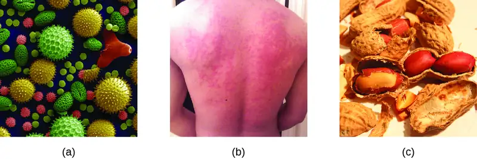
For susceptible individuals, a first exposure to an allergen activates a strong TH2 cell response (Figure 19.3). Cytokines interleukin (IL)-4 and IL-13 from the TH2 cells activate B cells specific to the same allergen, resulting in clonal proliferation, differentiation into plasma cells, and antibody-class switch from production of IgM to production of IgE. The fragment crystallizable (Fc) regions of the IgE antibodies bind to specific receptors on the surface of mast cells throughout the body. It is estimated that each mast cell can bind up to 500,000 IgE molecules, with each IgE molecule having two allergen-specific fragment antigen-binding (Fab) sites available for binding allergen on subsequent exposures. By the time this occurs, the allergen is often no longer present and there is no allergic reaction, but the mast cells are primed for a subsequent exposure and the individual is sensitized to the allergen.
On subsequent exposure, allergens bind to multiple IgE molecules on mast cells, cross-linking the IgE molecules. Within minutes, this cross-linking of IgE activates the mast cells and triggers degranulation, a reaction in which the contents of the granules in the mast cell are released into the extracellular environment. Preformed components that are released from granules include histamine, serotonin, and bradykinin (Table 19.1). The activated mast cells also release newly formed lipid mediators (leukotrienes and prostaglandins from membrane arachadonic acid metabolism) and cytokines such as tumor necrosis factor (Table 19.2).
The chemical mediators released by mast cells collectively cause the inflammation and signs and symptoms associated with type I hypersensitivity reactions. Histamine stimulates mucus secretion in nasal passages and tear formation from lacrimal glands, promoting the runny nose and watery eyes of allergies. Interaction of histamine with nerve endings causes itching and sneezing. The vasodilation caused by several of the mediators can result in hives, headaches, angioedema (swelling that often affects the lips, throat, and tongue), and hypotension (low blood pressure). Bronchiole constriction caused by some of the chemical mediators leads to wheezing, dyspnea (difficulty breathing), coughing, and, in more severe cases, cyanosis (bluish color to the skin or mucous membranes). Vomiting can result from stimulation of the vomiting center in the cerebellum by histamine and serotonin. Histamine can also cause relaxation of intestinal smooth muscles and diarrhea.
Table 19.1
| Selected Preformed Components of Mast Cell Granules | |
|---|---|
| Granule Component | Activity |
| Heparin | Stimulates the generation of bradykinin, which causes increased vascular permeability, vasodilation, bronchiole constriction, and increased mucus secretion |
| Histamine | Causes smooth-muscle contraction, increases vascular permeability, increases mucus and tear formation |
| Serotonin | Increases vascular permeability, causes vasodilation and smooth-muscle contraction |
Table 19.2
| Selected Newly Formed Chemical Mediators of Inflammation and Allergic Response | |
|---|---|
| Chemical Mediator | Activity |
| Leukotriene | Causes smooth-muscle contraction and mucus secretion, increases vascular permeability |
| Prostaglandin | Causes smooth-muscle contraction and vasodilation |
| TNF-α (cytokine) | Causes inflammation and stimulates cytokine production by other cell types |
![Drawing of TH2 cell response. 1: Upon first exposure to allergen, antigen presenting cell processes antigen and presents it to TH2 Cell. A large antigen presenting cell is shown engulfing an antigen which is attached to a Class II MHC inside the cell. This class II MHC is then placed on the surface with the antigen on the end of the MHC. The TH2 cell has a receptor that binds to the antigen on the MHC. 2: TH2 cell releases IL-4 and IL-13 which activates B cell. The TH2 cell has unbound from the Antigen presenting cell and binds to a B cell with the antigen on it’s MHC and antibodies. The TH2 cell then releases small dots. 3: B cells proliferate and differentiate into plasma cells that synthesize and secrete IgE antibody. B cell is shown dividing. These cells tehn become plasma cells which are larger and are producing many IgE 4: IgE binds to mast cells by Fc region, sensitizing the mast cells. Mast cell is shown with IgE bound to it. 5: Upon subsequent exposure to allergen, mast cells with IgE bind to antigen and release inflammatory molecules, resulting in allergy symptoms. Antigen is shown bound to mast cell and the mast cell is releasing little dots labeled inflammatory molecules.](img/osc-microbio-19-01-degran.webp)
Type I hypersensitivity reactions can be either localized or systemic. Localized type I hypersensitivity reactions include hay fever rhinitis, hives, and asthma (Table 19.3). Systemic type I hypersensitivity reactions are referred to as anaphylaxis or anaphylactic shock. Although anaphylaxis shares many symptoms common with the localized type I hypersensitivity reactions, the swelling of the tongue and trachea, blockage of airways, dangerous drop in blood pressure, and development of shock can make anaphylaxis especially severe and life-threatening. In fact, death can occur within minutes of onset of signs and symptoms.
Late-phase reactions in type I hypersensitivities may develop 4–12 hours after the early phase and are mediated by eosinophils, neutrophils, and lymphocytes that have been recruited by chemotactic factors released from mast cells. Activation of these recruited cells leads to the release of more chemical mediators that cause tissue damage and late-phase symptoms of swelling and redness of the skin, coughing, wheezing, and nasal discharge.
Individuals who possess genes for maladaptive traits, such as intense type I hypersensitivity reactions to otherwise harmless components of the environment, would be expected to suffer reduced reproductive success. With this kind of evolutionary selective pressure, such traits would not be expected to persist in a population. This suggests that type I hypersensitivities may have an adaptive function. There is evidence that the IgE produced during type I hypersensitivity reactions is actually meant to counter helminth infections2. Helminths are one of few organisms that possess proteins that are targeted by IgE. In addition, there is evidence that helminth infections at a young age reduce the likelihood of type I hypersensitivities to innocuous substances later in life. Thus it may be that allergies are an unfortunate consequence of strong selection in the mammalian lineage or earlier for a defense against parasitic worms.
Table 19.3
| Type I Hypersensitivities | ||
|---|---|---|
| Common Name | Cause | Signs and Symptoms |
| Allergy-induced asthma | Inhalation of allergens | Constriction of bronchi, labored breathing, coughing, chills, body aches |
| Anaphylaxis | Systemic reaction to allergens | Hives, itching, swelling of tongue and throat, nausea, vomiting, low blood pressure, shock |
| Hay fever | Inhalation of mold or pollen | Runny nose, watery eyes, sneezing |
| Hives (urticaria) | Food or drug allergens, insect stings | Raised, bumpy skin rash with itching; bumps may converge into large raised areas |
Check Your Understanding
- What are the cells that cause a type I hypersensitivity reaction?
- Describe the differences between immediate and late-phase type I hypersensitivity reactions.
- List the signs and symptoms of anaphylaxis.
Micro Connections: The Hygiene Hypothesis
In most modern societies, good hygiene is associated with regular bathing, and good health with cleanliness. But some recent studies suggest that the association between health and clean living may be a faulty one. Some go so far as to suggest that children should be encouraged to play in the dirt—or even eat dirt3—for the benefit of their health. This recommendation is based on the so-called hygiene hypothesis, which proposes that childhood exposure to antigens from a diverse range of microbes leads to a better-functioning immune system later in life.
The hygiene hypothesis was first suggested in 1989 by David Strachan4, who observed an inverse relationship between the number of older children in a family and the incidence of hay fever. Although hay fever in children had increased dramatically during the mid-20th century, incidence was significantly lower in families with more children. Strachan proposed that the lower incidence of allergies in large families could be linked to infections acquired from older siblings, suggesting that these infections made children less susceptible to allergies. Strachan also argued that trends toward smaller families and a greater emphasis on cleanliness in the 20th century had decreased exposure to pathogens and thus led to higher overall rates of allergies, asthma, and other immune disorders.
Other researchers have observed an inverse relationship between the incidence of immune disorders and infectious diseases that are now rare in industrialized countries but still common in less industrialized countries.5 In developed nations, children under the age of 5 years are not exposed to many of the microbes, molecules, and antigens they almost certainly would have encountered a century ago. The lack of early challenges to the immune system by organisms with which humans and their ancestors evolved may result in failures in immune system functioning later in life.
Type II (Cytotoxic) Hypersensitivities¶
Immune reactions categorized as type II hypersensitivities, or cytotoxic hypersensitivities, are mediated by IgG and IgM antibodies binding to cell-surface antigens or matrix-associated antigens on basement membranes. These antibodies can either activate complement, resulting in an inflammatory response and lysis of the targeted cells, or they can be involved in antibody-dependent cell-mediated cytotoxicity (ADCC) with cytotoxic T cells.
In some cases, the antigen may be a self-antigen, in which case the reaction would also be described as an autoimmune disease. (Autoimmune diseases are described in Autoimmune Disorders). In other cases, antibodies may bind to naturally occurring, but exogenous, cell-surface molecules such as antigens associated with blood typing found on red blood cells (RBCs). This leads to the coating of the RBCs by antibodies, activation of the complement cascade, and complement-mediated lysis of RBCs, as well as opsonization of RBCs for phagocytosis. Two examples of type II hypersensitivity reactions involving RBCs are hemolytic transfusion reaction (HTR) and hemolytic disease of the newborn (HDN). These type II hypersensitivity reactions, which will be discussed in greater detail, are summarized in Table 19.4.
Immunohematology is the study of blood and blood-forming tissue in relation to the immune response. Antibody-initiated responses against blood cells are type II hypersensitivities, thus falling into the field of immunohematology. For students first learning about immunohematology, understanding the immunological mechanisms involved is made even more challenging by the complex nomenclature system used to identify different blood-group antigens, often called blood types. The first blood-group antigens either used alphabetical names or were named for the first person known to produce antibodies to the red blood cell antigen (e.g., Kell, Duffy, or Diego). However, in 1980, the International Society of Blood Transfusion (ISBT) Working Party on Terminology created a standard for blood-group terminology in an attempt to more consistently identify newly discovered blood group antigens. New antigens are now given a number and assigned to a blood-group system, collection, or series. However, even with this effort, blood-group nomenclature is still inconsistent.
Table 19.4
| Common Type II Hypersensitivities | ||
|---|---|---|
| Common Name | Cause | Signs and Symptoms |
| Hemolytic disease of the newborn (HDN) | IgG from female crosses the placenta, targeting the fetus’ RBCs for destruction | Anemia, edema, enlarged liver or spleen, hydrops (fluid in body cavity), leading to death of newborn in severe cases |
| Hemolytic transfusion reactions (HTR) | IgG and IgM bind to antigens on transfused RBCs, targeting donor RBCs for destruction | Fever, jaundice, hypotension, disseminated intravascular coagulation, possibly leading to kidney failure and death |
ABO Blood Group Incompatibility¶
The recognition that individuals have different blood types was first described by Karl Landsteiner (1868–1943) in the early 1900s, based on his observation that serum from one person could cause a clumping of RBCs from another. These studies led Landsteiner to the identification of four distinct blood types. Subsequent research by other scientists determined that the four blood types were based on the presence or absence of surface carbohydrates “A” and “B,” and this provided the foundation for the ABO blood group system that is still in use today (Figure 19.4). The functions of these antigens are unknown, but some have been associated with normal biochemical functions of the cell. Furthermore, ABO blood types are inherited as alleles (one from each parent), and they display patterns of dominant and codominant inheritance. The alleles for A and B blood types are codominant to each other, and both are dominant over blood type O. Therefore, individuals with genotypes of AA or AO have type A blood and express the A carbohydrate antigen on the surface of their RBCs. People with genotypes of BB or BO have type B blood and express the B carbohydrate antigen on the surface of their RBCs. Those with a genotype of AB have type AB blood and express both A and B carbohydrate antigens on the surface of their RBCs. Finally, individuals with a genotype of OO have type O blood and lack A and B carbohydrate on the surface of their RBCs.
It is important to note that the RBCs of all four ABO blood types share a common protein receptor molecule, and it is the addition of specific carbohydrates to the protein receptors that determines A, B, and AB blood types. The genes that are inherited for the A, B, and AB blood types encode enzymes that add the carbohydrate component to the protein receptor. Individuals with O blood type still have the protein receptor but lack the enzymes that would add carbohydrates that would make their red blood cell type A, B, or AB.
IgM antibodies in plasma that cross-react with blood group antigens not present on an individual’s own RBCs are called isohemagglutinins (Figure 19.4). Isohemagglutinins are produced within the first few weeks after birth and persist throughout life. These antibodies are produced in response to exposure to environmental antigens from food and microorganisms. A person with type A blood has A antigens on the surface of their RBCs and will produce anti-B antibodies to environmental antigens that resemble the carbohydrate component of B antigens. A person with type B blood has B antigens on the surface of their RBCs and will produce anti-A antibodies to environmental antigens that are similar to the carbohydrate component of A antigens. People with blood type O lack both A and B antigens on their RBCs and, therefore, produce both anti-A and anti-B antibodies. Conversely, people with AB blood type have both A and B antigens on their RBCs and, therefore, lack anti-A and anti-B antibodies.

A patient may require a blood transfusion because they lack sufficient RBCs (anemia) or because they have experienced significant loss of blood volume through trauma or disease. Although the blood transfusion is given to help the patient, it is essential that the patient receive a transfusion with matching ABO blood type. A transfusion with an incompatible ABO blood type may lead to a strong, potentially lethal type II hypersensitivity cytotoxic response called hemolytic transfusion reaction (HTR) (Figure 19.5).
For instance, if a person with type B blood receives a transfusion of type A blood, their anti-A antibodies will bind to and agglutinate the transfused RBCs. In addition, activation of the classical complement cascade will lead to a strong inflammatory response, and the complement membrane attack complex (MAC) will mediate massive hemolysis of the transfused RBCs. The debris from damaged and destroyed RBCs can occlude blood vessels in the alveoli of the lungs and the glomeruli of the kidneys. Within 1 to 24 hours of an incompatible transfusion, the patient experiences fever, chills, pruritus (itching), urticaria (hives), dyspnea, hemoglobinuria (hemoglobin in the urine), and hypotension (low blood pressure). In the most serious reactions, dangerously low blood pressure can lead to shock, multi-organ failure, and death of the patient.
Hospitals, medical centers, and associated clinical laboratories typically use hemovigilance systems to minimize the risk of HTRs due to clerical error. Hemovigilance systems are procedures that track transfusion information from the donor source and blood products obtained to the follow-up of recipient patients. Hemovigilance systems used in many countries identify HTRs and their outcomes through mandatory reporting (e.g., to the Food and Drug Administration in the United States), and this information is valuable to help prevent such occurrences in the future. For example, if an HTR is found to be the result of laboratory or clerical error, additional blood products collected from the donor at that time can be located and labeled correctly to avoid additional HTRs. As a result of these measures, HTR-associated deaths in the United States occur in about one per 2 million transfused units.6
![Diagram of a Type A donor giving blood to a Type B recipient. 1: Donated type A blook with type A antigens enters bloodstream of type B recipient. Red blood cells with Type A antigens and red blood cells with Type B antigens are shown; anti-A antibody is also present. 2: Anti-A antibodies in plasma of Type B recipient bind to donated type A red blood cells. 3: Bound anti-A antibodies activate complement cascade, releasing hemoglobulin and destroying red blood cells. Small dots are shown destroying type A cells.](img/osc-microbio-19-01-htr.webp)
Rh Factors¶
Many different types of erythrocyte antigens have been discovered since the description of the ABO red cell antigens. The second most frequently described RBC antigens are Rh factors, named after the rhesus macaque (Macaca mulatta) factors identified by Karl Landsteiner and Alexander Weiner in 1940. The Rh system of RBC antigens is the most complex and immunogenic blood group system, with more than 50 specificities identified to date. Of all the Rh antigens, the one designated Rho (Weiner) or D (Fisher-Race) is the most immunogenic. Cells are classified as Rh positive (Rh+) if the Rho/D antigen is present or as Rh negative (Rh−) if the Rho/D antigen is absent. In contrast to the carbohydrate molecules that distinguish the ABO blood groups and are the targets of IgM isohemagglutinins in HTRs, the Rh factor antigens are proteins. As discussed in B Lymphocytes and Humoral Immunity, protein antigens activate B cells and antibody production through a T-cell–dependent mechanism, and the TH2 cells stimulate class switching from IgM to other antibody classes. In the case of Rh factor antigens, TH2 cells stimulate class switching to IgG, and this has important implications for the mechanism of HDN.
Like ABO incompatibilities, blood transfusions from a donor with the wrong Rh factor antigens can cause a type II hypersensitivity HTR. However, in contrast to the IgM isohemagglutinins produced early in life through exposure to environmental antigens, production of anti-Rh factor antibodies requires the exposure of an individual with Rh− blood to Rh+ positive RBCs and activation of a primary antibody response. Although this primary antibody response can cause an HTR in the transfusion patient, the hemolytic reaction would be delayed up to 2 weeks during the extended lag period of a primary antibody response (B Lymphocytes and Humoral Immunity). However, if the patient receives a subsequent transfusion with Rh+ RBCs, a more rapid HTR would occur with anti-Rh factor antibody already present in the blood. Furthermore, the rapid secondary antibody response would provide even more anti-Rh factor antibodies for the HTR.
Rh factor incompatibility between a pregnant person and fetus can also cause a type II hypersensitivity hemolytic reaction, referred to as hemolytic disease of the newborn (HDN) (Figure 19.6). If an Rh− female carries an Rh+ baby to term, pregnant person's immune system can be exposed to Rh+ fetal red blood cells. This exposure will usually occur during the last trimester of pregnancy and during the delivery process. If this exposure occurs, the Rh+ fetal RBCs will activate a primary adaptive immune response in the pregnant person, and anti-Rh factor IgG antibodies will be produced. IgG antibodies are the only class of antibody that can cross the placenta to impact the fetus; however, in most cases, the first Rh+ baby is unaffected by these antibodies because the first exposure typically occurs late enough in the pregnancy that the pregnant person does not have time to mount a sufficient primary antibody response before the baby is born.
If a subsequent pregnancy with an Rh+ fetus occurs, however, the female's second exposure to the Rh factor antigens causes a strong secondary antibody response that produces larger quantities of anti-Rh factor IgG. These antibodies can cross the placenta to the fetus and cause HDN, a potentially lethal condition for the baby (Figure 19.6).
Prior to the development of techniques for diagnosis and prevention, Rh factor incompatibility was the most common cause of HDN, resulting in thousands of infant deaths each year worldwide.7 For this reason, the Rh factors of prospective parents are regularly screened, and treatments have been developed to prevent HDN caused by Rh incompatibility. To prevent Rh factor-mediated HDN, human Rho(D) immune globulin (e.g., RhoGAM) is injected intravenously or intramuscularly into pregnant people during the 28th week of pregnancy and within 72 hours after delivery. Additional doses may be administered after events that may result in transplacental hemorrhage (e.g., umbilical blood sampling, chorionic villus sampling, abdominal trauma, amniocentesis). This treatment is initiated during the first pregnancy with an Rh+ fetus. The anti-Rh antibodies in Rho(D) immune globulin will bind to the Rh factor of any fetal RBCs that gain access to the pregnant person's bloodstream, preventing these Rh+ cells from activating the primary antibody response. Without a primary anti-Rh factor antibody response, the next pregnancy with an Rh+ will have minimal risk of HDN. However, the person will need to be retreated with Rho(D) immune globulin during that pregnancy to prevent a primary anti-Rh antibody response that could threaten subsequent pregnancies.
![a) First pregnancy with Rh+ fetus resulting in healthy newborn. The diagram shows an Rh- person and an Rh+ fetus. Rh+ red blood cells cross the placenta into pregnant person’s circulation. This causes anti-Rh antibodies to be produced in the person upon exposure to fetal Rh antigens. The second pregnancy with Rh+ fetus results in hemolytic newborn. The diagram shows an Rh- person with an Rh+ fetus. Anti-Rh antibodies remain in pregnant person’s circulation from the first pregnancy and cross the placenta. Maternal anti-Rh antibodies attack and destroy fetal Rh+ red blood cells. b) First pregnancy with Rh+ fetus and anti-Rh antibody treatment resulting in healthy newborn The diagram shows an Rh- person and an Rh+ fetus. Rh+ red blood cells from the fetus cross placenta into pregnant person’s circulation. Anti-Rh antibodies (Rhogam) bind and inactivate fetal Rh antigens before they stimulate immune response in the pregnant person.](img/osc-microbio-19-01-hdn.webp)
Link to Learning
Use this interactive Blood Typing Game to reinforce your knowledge of blood typing.
Check Your Understanding
- What happens to cells that possess incompatible antigens in a type II hypersensitivity reaction?
- Describe hemolytic disease of the newborn and explain how it can be prevented.
Clinical Focus: Part 2
Kerry’s primary care physician is not sure why Kerry seems to develop rashes after spending time in the sun, so she orders a urinalysis and basic blood tests. The results reveal that Kerry has proteinuria (abnormal protein levels in the urine), hemoglobinuria (excess hemoglobin in the urine), and a low hematocrit (RBC count). These tests suggest that Kerry is suffering from a mild bout of hemolytic anemia. The physician suspects that the problem might be autoimmune, so she refers Kerry to a rheumatologist for additional testing and diagnosis.
- Rheumatologists specialize in musculoskeletal diseases such as arthritis, osteoporosis, and joint pain. Why might Kerry’s physician refer her to this particular type of specialist even though she is exhibiting none of these symptoms?
Jump to the next Clinical Focus box. Go back to the previous Clinical Focus box.
Type III Hypersensitivities¶
Type III hypersensitivities are immune-complex reactions that were first characterized by Nicolas Maurice Arthus (1862–1945) in 1903. To produce antibodies for experimental procedures, Arthus immunized rabbits by injecting them with serum from horses. However, while immunizing rabbits repeatedly with horse serum, Arthus noticed a previously unreported and unexpected localized subcutaneous hemorrhage with edema at the site of injection. This reaction developed within 3 to10 hours after injection. This localized reaction to non-self serum proteins was called an Arthus reaction. An Arthus reaction occurs when soluble antigens bind with IgG in a ratio that results in the accumulation of antigen-antibody aggregates called immune complexes.
A unique characteristic of type III hypersensitivity is antibody excess (primarily IgG), coupled with a relatively low concentration of antigen, resulting in the formation of small immune complexes that deposit on the surface of the epithelial cells lining the inner lumen of small blood vessels or on the surfaces of tissues (Figure 19.7). This immune complex accumulation leads to a cascade of inflammatory events that include the following:
1) IgG binding to antibody receptors on localized mast cells, resulting in mast-cell degranulation
2) Complement activation with production of pro-inflammatory C3a and C5a (see Chemical Defenses)
3) Increased blood-vessel permeability with chemotactic recruitment of neutrophils and macrophages
Because these immune complexes are not an optimal size and are deposited on cell surfaces, they cannot be phagocytosed in the usual way by neutrophils and macrophages, which, in turn, are often described as “frustrated.” Although phagocytosis does not occur, neutrophil degranulation results in the release of lysosomal enzymes that cause extracellular destruction of the immune complex, damaging localized cells in the process. Activation of coagulation pathways also occurs, resulting in thrombi (blood clots) that occlude blood vessels and cause ischemia that can lead to vascular necrosis and localized hemorrhage.
Systemic type III hypersensitivity (serum sickness) occurs when immune complexes deposit in various body sites, resulting in a more generalized systemic inflammatory response. These immune complexes involve non-self proteins such as antibodies produced in animals for artificial passive immunity (see Vaccines), certain drugs, or microbial antigens that are continuously released over time during chronic infections (e.g., subacute bacterial endocarditis, chronic viral hepatitis). The mechanisms of serum sickness are similar to those described in localized type III hypersensitivity but involve widespread activation of mast cells, complement, neutrophils, and macrophages, which causes tissue destruction in areas such as the kidneys, joints, and blood vessels. As a result of tissue destruction, symptoms of serum sickness include chills, fever, rash, vasculitis, and arthritis. Development of glomerulonephritis or hepatitis is also possible.
Autoimmune diseases such as systemic lupus erythematosus (SLE) and rheumatoid arthritis can also involve damaging type III hypersensitivity reactions when auto-antibodies form immune complexes with self antigens. These conditions are discussed in Autoimmune Disorders.
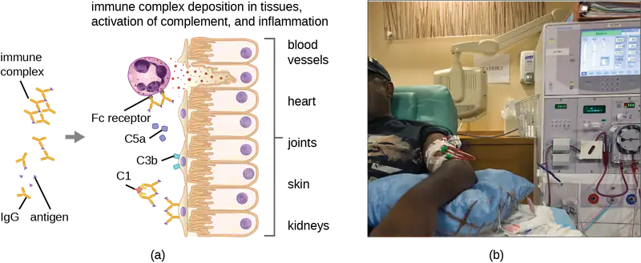
Check Your Understanding
- Why is antibody excess important in type III hypersensitivity?
- Describe the differences between the Arthus reaction and serum sickness.
Micro Connections: Diphtheria Antitoxin
Antibacterial sera are much less commonly used now than in the past, having been replaced by toxoid vaccines. However, a diphtheria antitoxin produced in horses is one example of such a treatment that is still used in some parts of the world. Although it is not licensed by the FDA for use in the United States, diphtheria antitoxin can be used to treat cases of diphtheria, which are caused by the bacterium Corynebacterium diphtheriae.8 The treatment is not without risks, however. Serum sickness can occur when the patient develops an immune response to non-self horse proteins. Immune complexes are formed between the horse proteins and circulating antibodies when the two exist in certain proportions. These immune complexes can deposit in organs, causing damage such as arthritis, nephritis, rash, and fever. Serum sickness is usually transient with no permanent damage unless the patient is chronically exposed to the antigen, which can then result in irreversible damage to body sites such as joints and kidneys. Over time, phagocytic cells such as macrophages are able to clear the horse serum antigens, which results in improvement of the patient’s condition and a decrease in symptoms as the immune response dissipates.
Clinical Focus: Part 3
Kerry does not make it to the rheumatologist. She has a seizure as she is leaving her primary care physician’s office. She is quickly rushed to the emergency department, where her primary care physician relates her medical history and recent test results. The emergency department physician calls in the rheumatologist on staff at the hospital for consultation. Based on the symptoms and test results, the rheumatologist suspects that Kerry has lupus and orders a pair of blood tests: an antinuclear antibody test (ANA) to look for antibodies that bind to DNA and another test that looks for antibodies that bind to a self-antigen called the Smith antigen (Sm).
- Based on the blood tests ordered, what type of reaction does the rheumatologist suspect is causing Kerry’s seizure?
Jump to the next Clinical Focus box. Go back to the previous Clinical Focus box.
Type IV Hypersensitivities¶
Type IV hypersensitivities are not mediated by antibodies like the other three types of hypersensitivities. Rather, type IV hypersensitivities are regulated by T cells and involve the action of effector cells. These types of hypersensitivities can be organized into three subcategories based on T-cell subtype, type of antigen, and the resulting effector mechanism (Table 19.5).
In the first type IV subcategory, CD4 TH1-mediated reactions are described as delayed-type hypersensitivities (DTH). The sensitization step involves the introduction of antigen into the skin and phagocytosis by local antigen presenting cells (APCs). The APCs activate helper T cells, stimulating clonal proliferation and differentiation into memory TH1 cells. Upon subsequent exposure to the antigen, these sensitized memory TH1 cells release cytokines that activate macrophages, and activated macrophages are responsible for much of the tissue damage. Examples of this TH1-mediated hypersensitivity are observed in tuberculin the Mantoux skin test and contact dermatitis, such as occurs in latex allergy reactions.
In the second type IV subcategory, CD4 TH2-mediated reactions result in chronic asthma or chronic allergic rhinitis. In these cases, the soluble antigen is first inhaled, resulting in eosinophil recruitment and activation with the release of cytokines and inflammatory mediators.
In the third type IV subcategory, CD8 cytotoxic T lymphocyte (CTL)-mediated reactions are associated with tissue transplant rejection and contact dermatitis (Figure 19.8). For this form of cell-mediated hypersensitivity, APCs process and present the antigen with MHC I to naïve CD8 T cells. When these naïve CD8 T cells are activated, they proliferate and differentiate into CTLs. Activated TH1 cells can also enhance the activation of the CTLs. The activated CTLs then target and induce granzyme-mediated apoptosis in cells presenting the same antigen with MHC I. These target cells could be “self” cells that have absorbed the foreign antigen (such as with contact dermatitis due to poison ivy), or they could be transplanted tissue cells displaying foreign antigen from the donor.
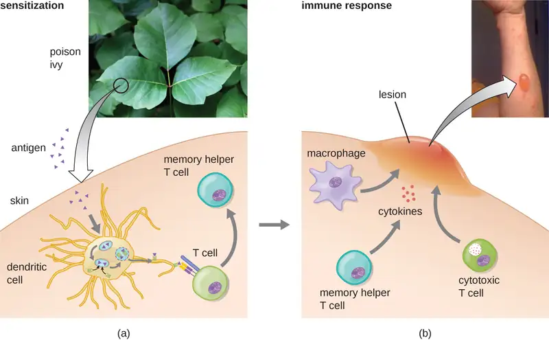
Table 19.5
| Type IV Hypersensitivities | |||
|---|---|---|---|
| Subcategory | Antigen | Effector Mechanism | Examples |
| 1 | Soluble antigen | Activated macrophages damage tissue and promote inflammatory response | Contact dermatitis (e.g., exposure to latex) and delayed-type hypersensitivity (e.g., tuberculin reaction) |
| 2 | Soluble antigen | Eosinophil recruitment and activation release cytokines and pro-inflammatory chemicals | Chronic asthma and chronic allergic rhinitis |
| 3 | Cell-associated antigen | CTL-mediated cytotoxicity | Contact dermatitis (e.g., contact with poison ivy) and tissue-transplant rejection |
Check Your Understanding
- Describe the three subtypes of type IV hypersensitivity.
- Explain how T cells contribute to tissue damage in type IV hypersensitivity.
Micro Connections: Using Delayed Hypersensitivity to Test for TB
Austrian pediatrician Clemans von Pirquet (1874–1929) first described allergy mechanisms, including type III serum sickness.9 His interest led to the development of a test for tuberculosis (TB), using the tuberculin antigen, based on earlier work identifying the TB pathogen performed by Robert Koch. Pirquet’s method involved scarification, which results in simultaneous multiple punctures, using a device with an array of needles to break the skin numerous times in a small area. The device Pirquet used was similar to the tine test device with four needles seen in Figure 19.9.
The tips of all the needles in the array are coated with tuberculin, a protein extract of TB bacteria, effectively introducing the tuberculin into the skin. One to 3 days later, the area can be examined for a delayed hypersensitivity reaction, signs of which include swelling and redness.
As you can imagine, scarification was not a pleasant experience,10 and the numerous skin punctures put the patient at risk of developing bacterial infection of the skin. Mantoux modified Pirquet’s test to use a single subcutaneous injection of purified tuberculin material. A positive test, which is indicated by a delayed localized swelling at the injection site, does not necessarily mean that the patient is currently infected with active TB. Because type IV (delayed-type) hypersensitivity is mediated by reactivation of memory T cells, such cells may have been created recently (due to an active current infection) or years prior (if a patient had TB and had spontaneously cleared it, or if it had gone into latency). However, the test can be used to confirm infection in cases in which symptoms in the patient or findings on a radiograph suggest its presence.
Hypersensitivity Pneumonitis¶
Some disease caused by hypersensitivities are not caused exclusively by one type. For example, hypersensitivity pneumonitis (HP), which is often an occupational or environmental disease, occurs when the lungs become inflamed due to an allergic reaction to inhaled dust, endospores, bird feathers, bird droppings, molds, or chemicals. HP goes by many different names associated with various forms of exposure (Figure 19.10). HP associated with bird droppings is sometimes called pigeon fancier’s lung or poultry worker’s lung—both common in bird breeders and handlers. Cheese handler’s disease, farmer’s lung, sauna takers' disease, and hot-tub lung are other names for HP associated with exposure to molds in various environments.
Pathology associated with HP can be due to both type III (mediated by immune complexes) and type IV (mediated by TH1 cells and macrophages) hypersensitivities. Repeated exposure to allergens can cause alveolitis due to the formation of immune complexes in the alveolar wall of the lung accompanied by fluid accumulation, and the formation of granulomas and other lesions in the lung as a result of TH1-mediated macrophage activation. Alveolitis with fluid and granuloma formation results in poor oxygen perfusion in the alveoli, which, in turn, can cause symptoms such as coughing, dyspnea, chills, fever, sweating, myalgias, headache, and nausea. Symptoms may occur as quickly as 2 hours after exposure and can persist for weeks if left untreated.
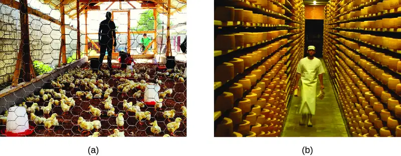
Check Your Understanding
- Explain why hypersensitivity pneumonitis is considered an occupational disease.
Figure 19.11 summarizes the mechanisms and effects of each type of hypersensitivity discussed in this section.
![Table summarizing four types of hypersensitivities. Type I uses immune reactant IgE and a soluble antigen. The mechanism of activation is: Allergen-specific IgE antibodies bind to mast cells via their Fc receptor. When the specific allergen binds to the IgE, cross-linking of IgE induces degranulation of mast cells. Examples of hypersensitive reactions include: Local and systemic anaphylaxis, seasonal hay fever, food allergies, and drug allergies. Type II uses immune reactant IgG or IgM and a cell-bound antigen. The mechanism of activation is: IgG or IgM antibody binds to cellular antigen, leading to complement activation and cell lysis. IgG can also mediate ADCC with cytotoxic T cells, natural killer cells, macrophages, and neutrophils. Examples of hypersensitive reactions include: Red blood cell destruction after transfusion with mismatched blood types or during hemolytic disease of the newborn. Type III uses immune reactant IgG or IgM and a soluble antigen. The mechanism of activation is: Antigen-antibody complexes are deposited in tissues. Complement activation provides inflammatory mediators and recruits neutrophils. Enzymes released from neutrophils damage tissue. Examples of hypersensitive reactions include: Local and systemic Post-streptococcal glomerulonephritis, rheumatoid arthritis, and systemic lupus erythematosus. Type IV uses immune reactant T cells and a soluble or cell-bound antigen. The mechanism of activation is: TH1 cells secreete cytokines, which activate macrophages and cytotoxic T cells.. Examples of hypersensitive reactions include: Contact dermatitis, type I diabetes mellitus, and multiple sclerosis.](img/osc-microbio-19-01-types.webp)
Diagnosis of Hypersensitivities¶
Diagnosis of type I hypersensitivities is a complex process requiring several diagnostic tests in addition to a well-documented patient history. Serum IgE levels can be measured, but elevated IgE alone does not confirm allergic disease. As part of the process to identify the antigens responsible for a type I reaction allergy, testing through a prick puncture skin test (PPST) or an intradermal test can be performed. PPST is carried out with the introduction of allergens in a series of superficial skin pricks on the patient’s back or arms (Figure 19.12). PPSTs are considered to be the most convenient and least expensive way to diagnose allergies, according to the US Joint Council of Allergy and the European Academy of Allergy and Immunology. The second type of testing, the intradermal test, requires injection into the dermis with a small needle. This needle, also known as a tuberculin needle, is attached to a syringe containing a small amount of allergen. Both the PPST and the intradermal tests are observed for 15–20 minutes for a wheal-flare reaction to the allergens. Measurement of any wheal (a raised, itchy bump) and flare (redness) within minutes indicates a type I hypersensitivity, and the larger the wheal-flare reaction, the greater the patient’s sensitivity to the allergen.
Type III hypersensitivities can often be misdiagnosed because of their nonspecific inflammatory nature. The symptoms are easily visible, but they may be associated with any of a number of other diseases. A strong, comprehensive patient history is crucial to proper and accurate diagnosis. Tests used to establish the diagnosis of hypersensitivity pneumonitis (resulting from type III hypersensitivity) include bronchoalveolar lavage (BAL), pulmonary function tests, and high-resolution computed tomography (HRCT).
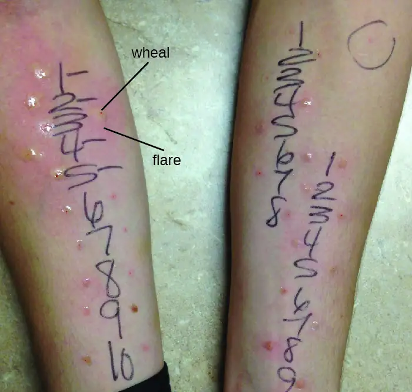
Check Your Understanding
- Describe the prick puncture skin test.
- Explain why type III hypersensitivities can be difficult to diagnose.
Treatments of Hypersensitivities¶
Allergic reactions can be treated in various ways. Prevention of allergic reactions can be achieved by desensitization (hyposensitization) therapy, which can be used to reduce the hypersensitivity reaction through repeated injections of allergens. Extremely dilute concentrations of known allergens (determined from the allergen tests) are injected into the patient at prescribed intervals (e.g., weekly). The quantity of allergen delivered by the shots is slowly increased over a buildup period until an effective dose is determined and that dose is maintained for the duration of treatment, which can last years. Patients are usually encouraged to remain in the doctor’s office for 30 minutes after receiving the injection in case the allergens administered cause a severe systemic reaction. Doctors’ offices that administer desensitization therapy must be prepared to provide resuscitation and drug treatment in the case of such an event.
Desensitization therapy is used for insect sting allergies and environmental allergies. The allergy shots elicit the production of different interleukins and IgG antibody responses instead of IgE. When excess allergen-specific IgG antibodies are produced and bind to the allergen, they can act as blocking antibodies to neutralize the allergen before it can bind IgE on mast cells. There are early studies using oral therapy for desensitization of food allergies that are promising.1112 These studies involve feeding children who have allergies tiny amounts of the allergen (e.g., peanut flour) or related proteins over time. Many of the subjects show reduced severity of reaction to the food allergen after the therapy.
There are also therapies designed to treat severe allergic reactions. Emergency systemic anaphylaxis is treated initially with an epinephrine injection, which can counteract the drop in blood pressure. Individuals with known severe allergies often carry a self-administering auto-injector that can be used in case of exposure to the allergen (e.g., an insect sting or accidental ingestion of a food that causes a severe reaction). By self-administering an epinephrine shot (or sometimes two), the patient can stem the reaction long enough to seek medical attention. Follow-up treatment generally involves giving the patient antihistamines and slow-acting corticosteroids for several days after the reaction to prevent potential late-phase reactions. However, the effects of antihistamine and corticosteroid treatment are not well studied and are used based on theoretical considerations.
Treatment of milder allergic reactions typically involves antihistamines and other anti-inflammatory drugs. A variety of antihistamine drugs are available, in both prescription and over-the-counter strengths. There are also antileukotriene and antiprostaglandin drugs that can be used in tandem with antihistamine drugs in a combined (and more effective) therapy regime.
Treatments of type III hypersensitivities include preventing further exposure to the antigen and the use of anti-inflammatory drugs. Some conditions can be resolved when exposure to the antigen is prevented. Anti-inflammatory corticosteroid inhalers can also be used to diminish inflammation to allow lung lesions to heal. Systemic corticosteroid treatment, oral or intravenous, is also common for type III hypersensitivities affecting body systems. Treatment of hypersensitivity pneumonitis includes avoiding the allergen, along with the possible addition of prescription steroids such as prednisone to reduce inflammation.
Treatment of type IV hypersensitivities includes antihistamines, anti-inflammatory drugs, analgesics, and, if possible, eliminating further exposure to the antigen.
Check Your Understanding
- Describe desensitization therapy.
- Explain the role of epinephrine in treatment of hypersensitivity reactions.
19.2 Autoimmune Disorders¶
Learning Objectives
By the end of this section, you will be able to:
- Explain why autoimmune disorders develop
- Provide a few examples of organ-specific and systemic autoimmune diseases
In 1970, artist Walt Kelly developed a poster promoting Earth Day, featuring a character from Pogo, his daily newspaper comic strip. In the poster, Pogo looks out across a litter-strewn forest and says wryly, “We have met the enemy and he is us.” Pogo was not talking about the human immune system, but he very well could have been. Although the immune system protects the body by attacking invading “enemies” (pathogens), in some cases, the immune system can mistakenly identify the body’s own cells as the enemy, resulting in autoimmune disease.
Autoimmune diseases are those in which the body is attacked by its own specific adaptive immune response. In normal, healthy states, the immune system induces tolerance, which is a lack of an anti-self immune response. However, with autoimmunity, there is a loss of immune tolerance, and the mechanisms responsible for autoimmune diseases include type II, III, and IV hypersensitivity reactions. Autoimmune diseases can have a variety of mixed symptoms that flare up and disappear, making diagnosis difficult.
The causes of autoimmune disease are a combination of the individual's genetic makeup and the effect of environmental influences, such as sunlight, infections, medications, and environmental chemicals. However, the vagueness of this list reflects our poor understanding of the etiology of these diseases. Except in a very few specific diseases, the initiation event(s) of most autoimmune states has not been fully characterized.
There are several possible causes for the origin of autoimmune diseases and autoimmunity is likely due to several factors. Evidence now suggests that regulatory T and B cells play an essential role in the maintenance of tolerance and prevention of autoimmune responses. The regulatory T cells are especially important for inhibiting autoreactive T cells that are not eliminated during thymic selection and escape the thymus (see T Lymphocytes and Cellular Immunity). In addition, antigen mimicry between pathogen antigens and our own self antigens can lead to cross-reactivity and autoimmunity. Hidden self-antigens may become exposed because of trauma, drug interactions, or disease states, and trigger an autoimmune response. All of these factors could contribute to autoimmunity. Ultimately, damage to tissues and organs in the autoimmune disease state comes as a result of inflammatory responses that are inappropriate; therefore, treatment often includes immunosuppressive drugs and corticosteroids.
Organ-Specific Autoimmune Diseases¶
Some autoimmune diseases are considered organ specific, meaning that the immune system targets specific organs or tissues. Examples of organ-specific autoimmune diseases include celiac disease, Graves disease, Hashimoto thyroiditis, type I diabetes mellitus, and Addison disease.
Celiac Disease¶
Celiac disease is largely a disease of the small intestine, although other organs may be affected. People in their 30s and 40s, and children are most commonly affected, but celiac disease can begin at any age. It results from a reaction to proteins, commonly called gluten, found mainly in wheat, barley, rye, and some other grains. The disease has several genetic causes (predispositions) and poorly understood environmental influences. On exposure to gluten, the body produces various autoantibodies and an inflammatory response. The inflammatory response in the small intestine leads to a reduction in the depth of the microvilli of the mucosa, which hinders absorption and can lead to weight loss and anemia. The disease is also characterized by diarrhea and abdominal pain, symptoms that are often misdiagnosed as irritable bowel syndrome.
Diagnosis of celiac disease is accomplished from serological tests for the presence of primarily IgA antibodies to components of gluten, the transglutinaminase enzyme, and autoantibodies to endomysium, a connective tissue surrounding muscle fibers. Serological tests are typically followed up with endoscopy and biopsy of the duodenal mucosa. Serological screening surveys have found about 1% of individuals in the United Kingdom are positive even though they do not all display symptoms.13 This early recognition allows for more careful monitoring and prevention of severe disease.
Celiac disease is treated with complete removal of gluten-containing foods from the diet, which results in improved symptoms and reduced risk of complications. Other theoretical approaches include breeding grains that do not contain the immunologically reactive components or developing dietary supplements that contain enzymes that break down the protein components that cause the immune response.14
Disorders of the Thyroid¶
Graves disease is the most common cause of hyperthyroidism in the United States. Symptoms of Graves disease result from the production of thyroid-stimulating immunoglobulin (TSI) also called TSH-receptor antibody. TSI targets and binds to the receptor for thyroid stimulating hormone (TSH), which is naturally produced by the pituitary gland. TSI may cause conflicting symptoms because it may stimulate the thyroid to make too much thyroid hormone or block thyroid hormone production entirely, making diagnosis more difficult. Signs and symptoms of Graves disease include heat intolerance, rapid and irregular heartbeat, weight loss, goiter (a swollen thyroid gland, protruding under the skin of the throat [Figure 19.13]) and exophthalmia (bulging eyes) often referred to as Graves ophthalmopathy (Figure 19.14).
The most common cause of hypothyroidism in the United States is Hashimoto thyroiditis, also called chronic lymphocytic thyroiditis. Patients with Hashimoto thyroiditis often develop a spectrum of different diseases because they are more likely to develop additional autoimmune diseases such as Addison disease (discussed later in this section), type 1 diabetes, rheumatoid arthritis, and celiac disease. Hashimoto thyroiditis is a TH1 cell-mediated disease that occurs when the thyroid gland is attacked by cytotoxic lymphocytes, macrophages, and autoantibodies. This autoimmune response leads to numerous symptoms that include goiter (Figure 19.13), cold intolerance, muscle weakness, painful and stiff joints, depression, and memory loss.
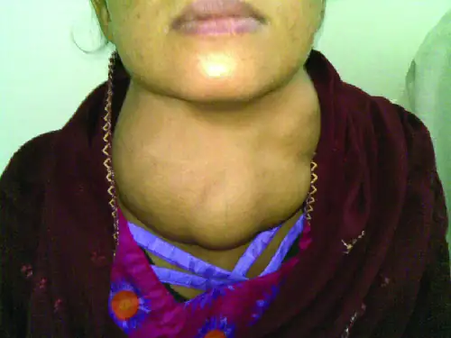
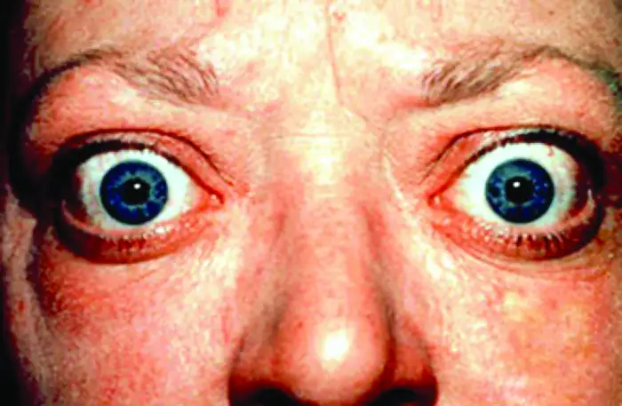
Type 1 Diabetes¶
Juvenile diabetes, or type 1 diabetes mellitus, is usually diagnosed in children and young adults. It is a T-cell-dependent autoimmune disease characterized by the selective destruction of the β cells of the islets of Langerhans in the pancreas by CD4 TH1-mediated CD8 T cells, anti-β-cell antibodies, and macrophage activity. There is also evidence that viral infections can have either a potentiating or inhibitory role in the development of type 1 diabetes (T1D) mellitus. The destruction of the β cells causes a lack of insulin production by the pancreas. In T1D, β-cell destruction may take place over several years, but symptoms of hyperglycemia, extreme increase in thirst and urination, weight loss, and extreme fatigue usually have a sudden onset, and diagnosis usually does not occur until most β cells have already been destroyed.
Autoimmune Addison Disease¶
Destruction of the adrenal glands (the glands lying above the kidneys that produce glucocorticoids, mineralocorticoids, and sex steroids) is the cause of Addison disease, also called primary adrenal insufficiency (PAI). Today, up to 80% of Addison disease cases are diagnosed as autoimmune Addison disease (AAD), which is caused by an autoimmune response to adrenal tissues disrupting adrenal function. Disruption of adrenal function causes impaired metabolic processes that require normal steroid hormone levels, causing signs and symptoms throughout the body. There is evidence that both humoral and CD4 TH1-driven CD8 T-cell–mediated immune mechanisms are directed at the adrenal cortex in AAD. There is also evidence that the autoimmune response is associated with autoimmune destruction of other endocrine glands as well, such as the pancreas and thyroid, conditions collectively referred to as autoimmune polyendocrine syndromes (APS). In up to 80% of patients with AAD, antibodies are produced to three enzymes involved in steroid synthesis: 21-hydroxylase (21-OH), 17α-hydroxylase, and cholesterol side-chain–cleaving enzyme.15 The most common autoantibody found in AAD is to 21-OH, and antibodies to any of the key enzymes for steroid production are diagnostic for AAD. The adrenal cortex cells are targeted, destroyed, and replaced with fibrous tissue by immune-mediated inflammation. In some patients, at least 90% of the adrenal cortex is destroyed before symptoms become diagnostic.
Symptoms of AAD include weakness, nausea, decreased appetite, weight loss, hyperpigmentation (Figure 19.15), hyperkalemia (elevated blood potassium levels), hyponatremia (decreased blood sodium levels), hypoglycemia (decreased levels of blood sugar), hypotension (decreased blood pressure), anemia, lymphocytosis (decreased levels of white blood cells), and fatigue. Under extreme stress, such as surgery, accidental trauma, or infection, patients with AAD may experience an adrenal crisis that causes the patient to vomit, experience abdominal pain, back or leg cramps, and even severe hypotension leading to shock.
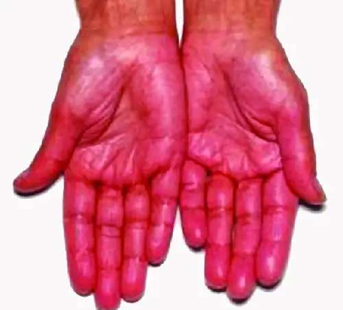
Check Your Understanding
- What are the names of autoimmune diseases that interfere with hormone gland function?
- Describe how the mechanisms of Graves disease and Hashimoto thyroiditis differ.
- Name the cells that are destroyed in type 1 diabetes mellitus and describe the result.
Systemic Autoimmune Diseases¶
Whereas organ-specific autoimmune diseases target specific organs or tissues, systemic autoimmune diseases are more generalized, targeting multiple organs or tissues throughout the body. Examples of systemic autoimmune diseases include multiple sclerosis, myasthenia gravis, psoriasis, rheumatoid arthritis, and systemic lupus erythematosus.
Multiple Sclerosis¶
Multiple sclerosis (MS) is an autoimmune central nervous system disease that affects the brain and spinal cord. Lesions in multiple locations within the central nervous system are a hallmark of multiple sclerosis and are caused by infiltration of immune cells across the blood-brain barrier. The immune cells include T cells that promote inflammation, demyelination, and neuron degeneration, all of which disrupt neuronal signaling. Symptoms of MS include visual disturbances; muscle weakness; difficulty with coordination and balance; sensations such as numbness, prickling, or “pins and needles”; and cognitive and memory problems.
Myasthenia Gravis¶
Autoantibodies directed against acetylcholine receptors (AChRs) in the synaptic cleft of neuromuscular junctions lead to myasthenia gravis (Figure 19.16). Anti-AChR antibodies are high-affinity IgGs and their synthesis requires activated CD4 T cells to interact with and stimulate B cells. Once produced, the anti-AChR antibodies affect neuromuscular transmission by at least three mechanisms:
- Complement binding and activation at the neuromuscular junction
- Accelerated AChR endocytosis of molecules cross-linked by antibodies
- Functional AChR blocking, which prevents normal acetylcholine attachment to, and activation of, AChR
Regardless of the mechanism, the effect of anti-AChR is extreme muscle weakness and potentially death through respiratory arrest in severe cases.
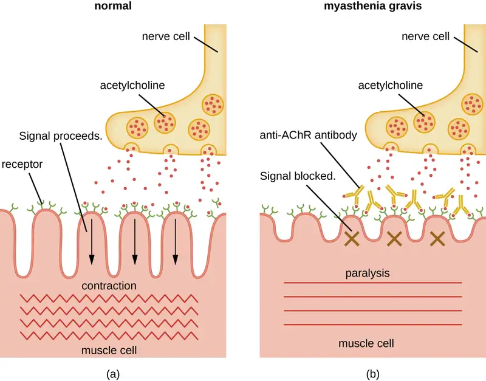
Psoriasis¶
Psoriasis is a skin disease that causes itchy or sore patches of thick, red skin with silvery scales on elbows, knees, scalp, back, face, palms, feet, and sometimes other areas. Some individuals with psoriasis also get a form of arthritis called psoriatic arthritis, in which the joints can become inflamed. Psoriasis results from the complex interplay between keratinocytes, dendritic cells, and T cells, and the cytokines produced by these various cells. In a process called cell turnover, skin cells that grow deep in the skin rise to the surface. Normally, this process takes a month. In psoriasis, as a result of cytokine activation, cell turnover happens in just a few days. The thick inflamed patches of skin that are characteristic of psoriasis develop because the skin cells rise too fast.
Rheumatoid Arthritis¶
The most common chronic inflammatory joint disease is rheumatoid arthritis (RA) (Figure 19.17) and it is still a major medical challenge because of unsolved questions related to the environmental and genetic causes of the disease. RA involves type III hypersensitivity reactions and the activation of CD4 T cells, resulting in chronic release of the inflammatory cytokines IL-1, IL-6, and tumor necrosis factor-α (TNF-α). The activated CD4 T cells also stimulate the production of rheumatoid factor (RF) antibodies and anticyclic citrullinated peptide antibodies (anti-CCP) that form immune complexes. Increased levels of acute-phase proteins, such as C-reactive protein (CRP), are also produced as part of the inflammatory process and participate in complement fixation with the antibodies on the immune complexes. The formation of immune complexes and reaction to the immune factors cause an inflammatory process in joints, particularly in the hands, feet, and legs. Diagnosis of RA is based on elevated levels of RF, anti-CCP, quantitative CRP, and the erythrocyte sedimentation rate (ESR) (modified Westergren). In addition, radiographs, ultrasound, or magnetic resonance imaging scans can identify joint damage, such as erosions, a loss of bone within the joint, and narrowing of joint space.
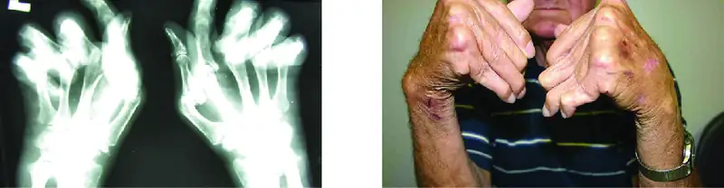
Systemic Lupus Erythematosus¶
The damage and pathology of systemic lupus erythematosus (SLE) is caused by type III hypersensitivity reactions. Autoantibodies produced in SLE are directed against nuclear and cytoplasmic proteins. Anti-nuclear antibodies (ANAs) are present in more than 95% of patients with SLE,16 with additional autoantibodies including anti-double–stranded DNA (ds-DNA) and anti-Sm antibodies (antibodies to small nuclear ribonucleoprotein). Anti-ds-DNA and anti-Sm antibodies are unique to patients with SLE; thus, their presence is included in the classification criteria of SLE. Cellular interaction with autoantibodies leads to nuclear and cellular destruction, with components released after cell death leading to the formation of immune complexes.
Because autoantibodies in SLE can target a wide variety of cells, symptoms of SLE can occur in many body locations. However, the most common symptoms include fatigue, fever with no other cause, hair loss, and a sunlight-sensitive "butterfly" or wolf-mask (lupus) rash that is found in about 50% of people with SLE (Figure 19.18). The rash is most often seen over the cheeks and bridge of the nose, but can be widespread. Other symptoms may appear depending on affected areas. The joints may be affected, leading to arthritis of the fingers, hands, wrists, and knees. Effects on the brain and nervous system can lead to headaches, numbness, tingling, seizures, vision problems, and personality changes. There may also be abdominal pain, nausea, vomiting, arrhythmias, shortness of breath, and blood in the sputum. Effects on the skin can lead to additional areas of skin lesions, and vasoconstriction can cause color changes in the fingers when they are cold (Raynaud phenomenon). Effects on the kidneys can lead to edema in the legs and weight gain. A diagnosis of SLE depends on identification of four of 11 of the most common symptoms and confirmed production of an array of autoantibodies unique to SLE. A positive test for ANAs alone is not diagnostic.
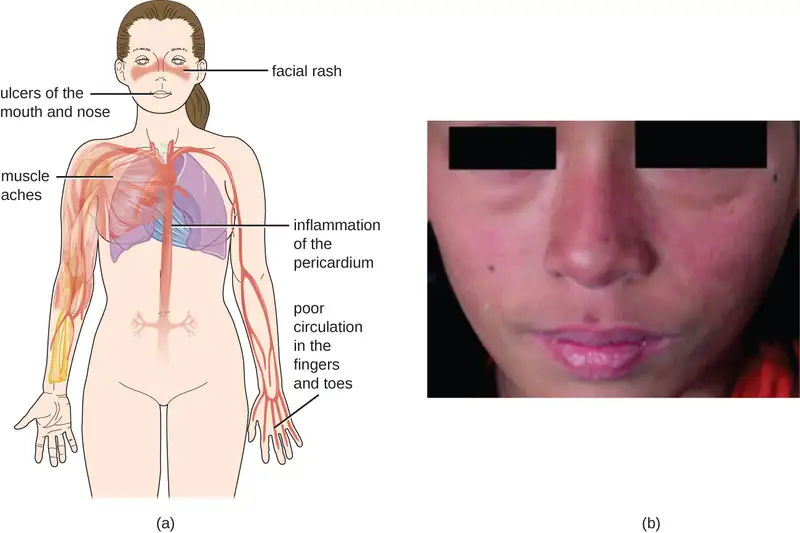
Check Your Understanding
- List the ways antibodies contribute to the pathogenesis of myasthenia gravis.
- Explain why rheumatoid arthritis is considered a type III hypersensitivity.
- Describe the symptoms of systemic lupus erythematosus and explain why they affect so many different parts of the body.
- What is recognized as an antigen in myasthenia gravis?
Table 19.6 summarizes the causes, signs, and symptoms of select autoimmune diseases.
Table 19.6
| Select Autoimmune Diseases | ||
|---|---|---|
| Disease | Cause | Signs and Symptoms |
| Addison disease | Destruction of adrenal gland cells by cytotoxic T cells | Weakness, nausea, hypotension, fatigue; adrenal crisis with severe pain in abdomen, lower back, and legs; circulatory system collapse, kidney failure |
| Celiac disease | Antibodies to gluten become autoantibodies that target cells of the small intestine | Severe diarrhea, abdominal pain, anemia, malnutrition |
| Diabetes mellitus (type I) | Cytotoxic T-cell destruction of the insulin-producing β cells of the pancreas | Hyperglycemia, extreme increase in thirst and urination, weight loss, extreme fatigue |
| Graves disease | Autoantibodies target thyroid-stimulating hormone receptors, resulting in overstimulation of the thyroid | Hyperthyroidism with rapid and irregular heartbeat, heat intolerance, weight loss, goiter, exophthalmia |
| Hashimoto thyroiditis | Thyroid gland is attacked by cytotoxic T cells, lymphocytes, macrophages, and autoantibodies | Thyroiditis with goiter, cold intolerance, muscle weakness, painful and stiff joints, depression, memory loss |
| Multiple sclerosis (MS) | Cytotoxic T-cell destruction of the myelin sheath surrounding nerve axons in the central nervous system | Visual disturbances, muscle weakness, impaired coordination and balance, numbness, prickling or “pins and needles” sensations, impaired cognitive function and memory |
| Myasthenia gravis | Autoantibodies directed against acetylcholine receptors within the neuromuscular junction | Extreme muscle weakness eventually leading to fatal respiratory arrest |
| Psoriasis | Cytokine activation of keratinocytes causes rapid and excessive epidermal cell turnover | Itchy or sore patches of thick, red skin with silvery scales; commonly affects elbows, knees, scalp, back, face, palms, feet |
| Rheumatoid arthritis | Autoantibodies, immune complexes, complement activation, phagocytes, and T cells damage membranes and bone in joints | Joint inflammation, pain and disfigurement, chronic systemic inflammation |
| Systemic lupus erythematosus (SLE) | Autoantibodies directed against nuclear and cytoplasmic molecules form immune complexes that deposit in tissues. Phagocytic cells and complement activation cause tissue damage and inflammation | Fatigue, fever, joint pain and swelling, hair loss, anemia, clotting, a sunlight-sensitive "butterfly" rash, skin lesions, photosensitivity, decreased kidney function, memory loss, confusion, depression |
19.3 Organ Transplantation and Rejection¶
Learning Objectives
By the end of this section, you will be able to:
- Explain why human leukocyte antigens (HLAs) are important in tissue transplantation
- Explain the types of grafts possible and their potential for interaction with the immune system
- Describe what occurs during graft-versus-host disease (GVHD)
A graft is the transplantation of an organ or tissue to a different location, with the goal of replacing a missing or damaged organ or tissue. Grafts are typically moved without their attachments to the circulatory system and must reestablish these, in addition to the other connections and interactions with their new surrounding tissues. There are different types of grafts depending on the source of the new tissue or organ. Tissues that are transplanted from one genetically distinct individual to another within the same species are called allografts. An interesting variant of the allograft is an isograft, in which tissue from one twin is transplanted to another. As long as the twins are monozygotic (therefore, essentially genetically identical), the transplanted tissue is virtually never rejected. If tissues are transplanted from one area on an individual to another area on the same individual (e.g., a skin graft on a burn patient), it is known as an autograft. If tissues from an animal are transplanted into a human, this is called a xenograft.
Transplant Rejection¶
The different types of grafts described above have varying risks for rejection (Table 19.7). Rejection occurs when the recipient’s immune system recognizes the donor tissue as foreign (non-self), triggering an immune response. The major histocompatibility complex markers MHC I and MHC II, more specifically identified as human leukocyte antigens (HLAs), play a role in transplant rejection. The HLAs expressed in tissue transplanted from a genetically different individual or species may be recognized as non-self molecules by the host’s dendritic cells. If this occurs, the dendritic cells will process and present the foreign HLAs to the host’s helper T cells and cytotoxic T cells, thereby activating them. Cytotoxic T cells then target and kill the grafted cells through the same mechanism they use to kill virus-infected cells; helper T cells may also release cytokines that activate macrophages to kill graft cells.
Table 19.7
| Types of Tissue and Organ Grafts and Their Complications | ||
|---|---|---|
| Graft | Procedure | Complications |
| Autograft | From self to self | No rejection concerns |
| Isograft | From identical twin to twin | Little concern of rejection |
| Allograft | From relative or nonrelative to individual | Rejection possible |
| Xenograft | From animal to human | Rejection possible |
With the three highly polymorphic MHC I genes in humans (HLA-A, HLA-B, and HLA-C) determining compatibility, each with many alleles segregating in a population, odds are extremely low that a randomly chosen donor will match a recipient's six-allele genotype (the two alleles at each locus are expressed codominantly). This is why a parent or a sibling may be the best donor in many situations—a genetic match between the MHC genes is much more likely and the organ is much less likely to be rejected.
Although matching all of the MHC genes can lower the risk for rejection, there are a number of additional gene products that also play a role in stimulating responses against grafted tissue. Because of this, no non-self grafted tissue is likely to completely avoid rejection. However, the more similar the MHC gene match, the more likely the graft is to be tolerated for a longer time. Most transplant recipients, even those with tissues well matched to their MHC genes, require treatment with immunosuppressant drugs for the rest of their lives. This can make them more vulnerable than the general population to complications from infectious diseases. It can also result in transplant-related malignancies because the body’s normal defenses against cancer cells are being suppressed.
Check Your Understanding
- What part of the immune response is responsible for graft rejection?
- Explain why blood relatives are preferred as organ donors.
- Describe the role of immunosuppression in transplantation.
Graft-versus-Host Disease¶
A form of rejection called graft-versus-host disease (GVHD) primarily occurs in recipients of bone marrow transplants and peripheral blood stem cells. GHVD presents a unique situation because the transplanted tissue is capable of producing immune cells; APCs in the donated bone marrow may recognize the host cells as non-self, leading to activation of the donor cytotoxic T cells. Once activated, the donor’s T cells attack the recipient cells, causing acute GVHD.
Acute GVHD typically develops within weeks after a bone marrow transplant, causing tissue damage affecting the skin, gastrointestinal tract, liver, and eyes. In addition, acute GVHD may also lead to a cytokine storm, an unregulated secretion of cytokines that may be fatal. In addition to acute GVHD, there is also the risk for chronic GVHD developing months after the bone marrow transplant. The mechanisms responsible for chronic GVHD are not well understood.
To minimize the risk of GVHD, it is critically important to match the HLAs of the host and donor as closely as possible in bone marrow transplants. In addition, the donated bone marrow is processed before grafting to remove as many donor APCs and T cells as possible, leaving mostly hematopoietic stem cells.
Check Your Understanding
- Why does GVHD occur in specifically in bone marrow transplants?
- What cells are responsible for GVHD?
The Future of Transplantation¶
Historically speaking, the practice of transplanting tissues—and the complications that can accompany such procedures—is a relatively recent development. It was not until 1954 that the first successful organ transplantation between two humans was achieved. Yet the field of organ transplantation has progressed rapidly since that time.
Nonetheless, the practice of transplanting non-self tissues may soon become obsolete. Scientists are now attempting to develop methods by which new organs may be grown in vitro from an individual’s own harvested cells to replace damaged or abnormal ones. Because organs produced in this way would contain the individual’s own cells, they could be transplanted into the individual without risk for rejection.
An alternative approach that is gaining renewed research interest is genetic modification of donor animals, such as pigs, to provide transplantable organs that do not elicit an immune response in the recipient. The approach involves excising the genes in the pig (in the embryo) that are most responsible for the rejection reaction after transplantation. Finding these genes and effectively removing them is a challenge, however. So too is identifying and neutralizing risks from viral sequences that might be embedded in the pig genome, posing a risk for infection in the human recipient.
Link to Learning
There are currently more than a dozen different tissues and organs used in human transplantations. Learn more about them at this website.
Clinical Focus: Resolution
Kerry's tests come back positive, confirming a diagnosis of lupus, a disease that occurs 10 times more frequently in females than males. SLE cannot be cured, but there are various therapies available for reducing and managing its symptoms. Specific therapies are prescribed based on the particular symptoms presenting in the patient. Kerry's rheumatologist starts her therapy with a low dose of corticosteroids to reduce her rashes. She also prescribes a low dose of hydroxychloroquine, an anti-inflammatory drug that is used to treat inflammation in patients with RA, childhood arthritis, SLE, and other autoimmune diseases. Although the mechanism of action of hydroxychloroquine is not well defined, it appears that this drug interferes with the processes of antigen processing and activation of autoimmunity. Because of its mechanism, the effects of hydroxychloroquine are not as immediate as that of other anti-inflammatory drugs, but it is still considered a good companion therapy for SLE. Kerry’s doctor also advises her to limit her exposure to sunlight, because photosensitivity to sunlight may precipitate rashes.
Over the next 6 months, Kerry follows her treatment plan and her symptoms do not return. However, future flare-ups are likely to occur. She will need to continue her treatment for the rest of her life and seek medical attention whenever new symptoms develop.
Go back to the previous Clinical Focus box.
19.4 Immunodeficiency¶
Learning Objectives
By the end of this section, you will be able to:
- Compare the causes of primary and secondary immunodeficiencies
- Describe treatments for primary and secondary immunodeficiencies
Immunodeficiencies are inherited (primary) or acquired (secondary) disorders in which elements of host immune defenses are either absent or functionally defective. In developed countries, most immunodeficiencies are inherited, and they are usually first seen in the clinic as recurrent or overwhelming infections in infants. However, on a global scale, malnutrition is the most common cause of immunodeficiency and would be categorized as an acquired immunodeficiency. Acquired immunodeficiencies are more likely to develop later in life, and the pathogenic mechanisms of many remain obscure.
Primary Immunodeficiency¶
Primary immunodeficiencies, which number more than 250, are caused by inherited defects of either nonspecific innate or specific adaptive immune defenses. In general, patients born with primary immunodeficiency (PI) commonly have an increased susceptibility to infection. This susceptibility can become apparent shortly after birth or in early childhood for some individuals, whereas other patients develop symptoms later in life. Some primary immunodeficiencies are due to a defect of a single cellular or humoral component of the immune system; others may result from defects of more than one component. Examples of primary immunodeficiencies include chronic granulomatous disease, X-linked agammaglobulinemia, selective IgA deficiency, and severe combined immunodeficiency disease.
Chronic Granulomatous Disease¶
The causes of chronic granulomatous disease (CGD) are defects in the NADPH oxidase system of phagocytic cells, including neutrophils and macrophages, that prevent the production of superoxide radicals in phagolysosomes. The inability to produce superoxide radicals impairs the antibacterial activity of phagocytes. As a result, infections in patients with CGD persist longer, leading to a chronic local inflammation called a granuloma. Microorganisms that are the most common causes of infections in patients with CGD include Aspergillus spp., Staphylococcus aureus, Chromobacterium violaceum, Serratia marcescens, and Salmonella typhimurium.
X-Linked Agammaglobulinemia¶
Deficiencies in B cells due to defective differentiation lead to a lack of specific antibody production known as X-linked agammaglobulinemia. In 1952, Ogden C. Bruton (1908–2003) described the first immunodeficiency in a boy whose immune system failed to produce antibodies. This defect is inherited on the X chromosome and is characterized by the absence of immunoglobulin in the serum; it is called Bruton X-linked agammaglobulinemia (XLA). The defective gene, BTK, in XLA is now known to encode a tyrosine kinase called Bruton tyrosine kinase (Btk). In patients whose B cells are unable to produce sufficient amounts of Btk, the B-cell maturation and differentiation halts at the pre-B-cell stage of growth. B-cell maturation and differentiation beyond the pre-B-cell stage of growth is required for immunoglobulin production. Patients who lack antibody production suffer from recurrent infections almost exclusively due to extracellular pathogens that cause pyogenic infections: Haemophilus influenzae, Streptococcus pneumoniae, S. pyogenes, and S. aureus. Because cell-mediated immunity is not impaired, these patients are not particularly vulnerable to infections caused by viruses or intracellular pathogens.
Selective IgA Deficiency¶
The most common inherited form of immunoglobulin deficiency is selective IgA deficiency, affecting about one in 800 people. Individuals with selective IgA deficiency produce normal levels of IgG and IgM, but are not able to produce secretory IgA. IgA deficiency predisposes these individuals to lung and gastrointestinal infections for which secretory IgA is normally an important defense mechanism. Infections in the lungs and gastrointestinal tract can involve a variety of pathogens, including H. influenzae, S. pneumoniae, Moraxella catarrhalis, S. aureus, Giardia lamblia, or pathogenic strains of Escherichia coli.
Severe Combined Immunodeficiency¶
Patients who suffer from severe combined immunodeficiency (SCID) have B-cell and T-cell defects that impair T-cell dependent antibody responses as well as cell-mediated immune responses. Patients with SCID also cannot develop immunological memory, so vaccines provide them no protection, and live attenuated vaccines (e.g., for varicella-zoster, measles virus, rotavirus, poliovirus) can actually cause the infection they are intended to prevent. The most common form is X-linked SCID, which accounts for nearly 50% of all cases and occurs primarily in males. Patients with SCID are typically diagnosed within the first few months of life after developing severe, often life-threatening, opportunistic infection by Candida spp., Pneumocystis jirovecii, or pathogenic strains of E. coli.
Without treatment, babies with SCID do not typically survive infancy. In some cases, a bone marrow transplant may successfully correct the defects in lymphocyte development that lead to the SCID phenotype, by replacing the defective component. However, this treatment approach is not without risks, as demonstrated by the famous case of David Vetter (1971–1984), better known as “Bubble Boy” (Figure 19.19). Vetter, a patient with SCID who lived in a protective plastic bubble to prevent exposure to opportunistic microbes, received a bone marrow transplant from his sister. Because of a latent Epstein-Barr virus infection in her bone marrow, however, he developed mononucleosis and died of Burkitt lymphoma at the age of 12 years.
Check Your Understanding
- What is the fundamental cause of a primary immunodeficiency?
- Explain why patients with chronic granulomatous disease are especially susceptible to bacterial infections.
- Explain why individuals with selective IgA deficiency are susceptible to respiratory and gastrointestinal infections.
Secondary Immunodeficiency¶
A secondary immunodeficiency occurs as a result an acquired impairment of function of B cells, T cells, or both. Secondary immunodeficiencies can be caused by:
- Systemic disorders such as diabetes mellitus, malnutrition, hepatitis, or HIV infection
- Immunosuppressive treatments such as cytotoxic chemotherapy, bone marrow ablation before transplantation, or radiation therapy
- Prolonged critical illness due to infection, surgery, or trauma in the very young, elderly, or hospitalized patients
Unlike primary immunodeficiencies, which have a genetic basis, secondary immunodeficiencies are often reversible if the underlying cause is resolved. Patients with secondary immunodeficiencies develop an increased susceptibility to an otherwise benign infection by opportunistic pathogens such as Candida spp., P. jirovecii, and Cryptosporidium.
HIV infection and the associated acquired immunodeficiency syndrome (AIDS) are the best-known secondary immunodeficiencies. AIDS is characterized by profound CD4 T-cell lymphopenia (decrease in lymphocytes). The decrease in CD4 T cells is the result of various mechanisms, including HIV-induced pyroptosis (a type of apoptosis that stimulates an inflammatory response), viral cytopathic effect, and cytotoxicity to HIV-infected cells.
The most common cause of secondary immunodeficiency worldwide is severe malnutrition, which affects both innate and adaptive immunity. More research and information are needed for the more common causes of secondary immunodeficiency; however, the number of new discoveries in AIDS research far exceeds that of any other single cause of secondary immunodeficiency. AIDS research has paid off extremely well in terms of discoveries and treatments; increased research into the most common cause of immunodeficiency, malnutrition, would likely be as beneficial.
Check Your Understanding
- What is the most common cause of secondary immunodeficiencies?
- Explain why secondary immunodeficiencies can sometimes be reversed.
Case in Point: An Immunocompromised Host
Benjamin, a 50-year-old male patient who has been receiving chemotherapy to treat his chronic myelogenous leukemia (CML), a disease characterized by massive overproduction of nonfunctional, malignant myelocytic leukocytes that crowd out other, healthy leukocytes, is seen in the emergency department. He is complaining of a productive, wet cough, dyspnea, and fatigue. On examination, his pulse is 120 beats per minute (bpm) (normal range is 60–100 bpm) and weak, and his blood pressure is 90/60 mm Hg (normal is 120/80 mm Hg). During auscultation, a distinct crackling can be heard in his lungs as he breathes, and his pulse-oximeter level (a measurement of blood-oxygen saturation) is 80% (normal is 95%–100%). He has a fever; his temperature is 38.9 °C (102 °F). Sputum cultures and blood samples are obtained and sent to the lab, but Benjamin goes into respiratory distress and dies before the results can be obtained.
Benjamin’s death was a result of a combination of his immune system being compromised by his leukemia and his chemotherapy treatment further weakening his ability to mount an immune response. CML (and leukemia in general) and corresponding chemotherapy cause a decrease in the number of leukocytes capable of normal function, leading to secondary immunodeficiency. This increases the risk for opportunistic bacterial, viral, protozoal, and fungal infections that could include Staphylococcus, enteroviruses, Pneumocystis, Giardia, or Candida. Benjamin’s symptoms were suggestive of bacterial pneumonia, but his leukemia and chemotherapy likely complicated and contributed to the severity of the pneumonia, resulting in his death. Because his leukemia was overproducing certain white blood cells, and those overproduced white blood cells were largely nonfunctional or abnormal in their function, he did not have the proper immune system blood cells to help him fight off the infection.
Table 19.8 summarizes primary and secondary immunodeficiencies, their effects on immune function, and typical outcomes.
Table 19.8
| Primary and Secondary Immunodeficiencies | |||
|---|---|---|---|
| Disease | Effect on Immune Function | Outcomes | |
| Primary immunodeficiencies | Chronic granulomatous disease | Impaired killing of bacteria within the phagolysosome of neutrophils and macrophages | Chronic infections and granulomas |
| Selective IgA deficiency | Inability to produce secretory IgA | Predisposition to lung and gastrointestinal infections | |
| Severe combined immunodeficiency disease (SCID) | Deficient humoral and cell-mediated immune responses | Early development of severe and life-threatening opportunistic infections | |
| X-linked agammaglobulinemia | Flawed differentiation of B cells and absence of specific antibodies | Recurrent infections almost exclusively due to pathogens that cause pyogenic infections | |
| Secondary immunodeficiencies | Immunosuppressive therapies (e.g., chemotherapy, radiotherapy) | Impaired humoral and/or cell-mediated immune responses | Opportunistic infections, rare cancers |
| Malnutrition | Impaired humoral and/or cell-mediated immune responses | Opportunistic infections, rare cancers | |
| Viral infection (e.g., HIV) | Impaired cell-mediated immune responses due to CD4 T-cell lymphopenia | Opportunistic infections, rare cancers | |
19.5 Cancer Immunobiology and Immunotherapy¶
Learning Objectives
By the end of this section, you will be able to:
- Explain how the adaptive specific immune response responds to tumors
- Discuss the risks and benefits of tumor vaccines
Cancer involves a loss of the ability of cells to control their cell cycle, the stages each eukaryotic cell goes through as it grows and then divides. When this control is lost, the affected cells rapidly divide and often lose the ability to differentiate into the cell type appropriate for their location in the body. In addition, they lose contact inhibition and can start to grow on top of each other. This can result in formation of a tumor. It is important to make a distinction here: The term “cancer” is used to describe the diseases resulting from loss of cell-cycle regulation and subsequent cell proliferation. But the term “tumor” is more general. A “tumor” is an abnormal mass of cells, and a tumor can be benign (not cancerous) or malignant (cancerous).
Traditional cancer treatment uses radiation and/or chemotherapy to destroy cancer cells; however, these treatments can have unwanted side effects because they harm normal cells as well as cancer cells. Newer, promising therapies attempt to enlist the patient’s immune system to target cancer cells specifically. It is known that the immune system can recognize and destroy cancerous cells, and some researchers and immunologists also believe, based on the results of their experiments, that many cancers are eliminated by the body’s own defenses before they can become a health problem. This idea is not universally accepted by researchers, however, and needs further investigation for verification.
Cell-Mediated Response to Tumors¶
Cell-mediated immune responses can be directed against cancer cells, many of which do not have the normal complement of self-proteins, making them a target for elimination. Abnormal cancer cells may also present tumor antigens. These tumor antigens are not a part of the screening process used to eliminate lymphocytes during development; thus, even though they are self-antigens, they can stimulate and drive adaptive immune responses against abnormal cells.
Presentation of tumor antigens can stimulate naïve helper T cells to become activated by cytokines such as IL-12 and differentiate into TH1cells. TH1 cells release cytokines that can activate natural killer (NK) cells and enhance the killing of activated cytotoxic T cells. Both NK cells and cytotoxic T cells can recognize and target cancer cells, and induce apoptosis through the action of perforins and granzymes. In addition, activated cytotoxic T cells can bind to cell-surface proteins on abnormal cells and induce apoptosis by a second killing mechanism called the CD95 (Fas) cytotoxic pathway.
Despite these mechanisms for removing cancerous cells from the body, cancer remains a common cause of death. Unfortunately, malignant tumors tend to actively suppress the immune response in various ways. In some cancers, the immune cells themselves are cancerous. In leukemia, lymphocytes that would normally facilitate the immune response become abnormal. In other cancers, the cancerous cells can become resistant to induction of apoptosis. This may occur through the expression of membrane proteins that shut off cytotoxic T cells or that induce regulatory T cells that can shut down immune responses.
The mechanisms by which cancer cells alter immune responses are still not yet fully understood, and this is a very active area of research. As scientists’ understanding of adaptive immunity improves, cancer therapies that harness the body’s immune defenses may someday be more successful in treating and eliminating cancer.
Check Your Understanding
- How do cancer cells suppress the immune system?
- Describe how the immune system recognizes and destroys cancer cells.
Cancer Vaccines¶
There are two types of cancer vaccines: preventive and therapeutic. Preventive vaccines are used to prevent cancer from occurring, whereas therapeutic vaccines are used to treat patients with cancer. Most preventive cancer vaccines target viral infections that are known to lead to cancer. These include vaccines against human papillomavirus (HPV) and hepatitis B, which help prevent cervical and liver cancer, respectively.
Most therapeutic cancer vaccines are in the experimental stage. They exploit tumor-specific antigens to stimulate the immune system to selectively attack cancer cells. Specifically, they aim to enhance TH1 function and interaction with cytotoxic T cells, which, in turn, results in more effective attack on abnormal tumor cells. In some cases, researchers have used genetic engineering to develop antitumor vaccines in an approach similar to that used for DNA vaccines (see Micro Connections: DNA vaccines). The vaccine contains a recombinant plasmid with genes for tumor antigens; theoretically, the tumor gene would not induce new cancer because it is not functional, but it could trick the immune system into targeting the tumor gene product as a foreign invader.
The first FDA-approved therapeutic cancer vaccine was sipuleucel-T (Provenge), approved in 2010 to treat certain cases of prostate cancer.17 This unconventional vaccine is custom designed using the patient’s own cells. APCs are removed from the patient and cultured with a tumor-specific molecule; the cells are then returned to the patient. This approach appears to enhance the patient’s immune response against the cancer cells. Another therapeutic cancer vaccine (talimogene laherparepvec, also called T-VEC or Imlygic) was approved by the FDA in 2015 for treatment of melanoma, a form of skin cancer. This vaccine contains a virus that is injected into tumors, where it infects and lyses the tumor cells. The virus also induces a response in lesions or tumors besides those into which the vaccine is injected, indicating that it is stimulating a more general (as opposed to local) antitumor immune response in the patient.
Check Your Understanding
- Explain the difference between preventative and therapeutic cancer vaccines.
- Describe at least two different approaches to developing therapeutic anti-cancer vaccines.
Micro Connections: Using Viruses to Cure Cancer
Viruses typically destroy the cells they infect—a fact responsible for any number of human diseases. But the cell-killing powers of viruses may yet prove to be the cure for some types of cancer, which is generally treated by attempting to rid the body of cancerous cells. Several clinical trials are studying the effects of viruses targeted at cancer cells. Reolysin, a drug currently in testing phases, uses reoviruses (respiratory enteric orphan viruses) that can infect and kill cells that have an activated Ras-signaling pathway, a common mutation in cancerous cells. Viruses such as rubeola (the measles virus) can also be genetically engineered to aggressively attack tumor cells. These modified viruses not only bind more specifically to receptors overexpressed on cancer cells, they also carry genes driven by promoters that are only turned on within cancer cells. Herpesvirus and others have also been modified in this way.
Chapter Review¶
Key Concepts and Summary¶
19.1 Hypersensitivities¶
- An allergy is an adaptive immune response, sometimes life-threatening, to an allergen.
- Type I hypersensitivity requires sensitization of mast cells with IgE, involving an initial IgE antibody response and IgE attachment to mast cells. On second exposure to an allergen, cross-linking of IgE molecules on mast cells triggers degranulation and release of preformed and newly formed chemical mediators of inflammation. Type I hypersensitivity may be localized and relatively minor (hives and hay fever) or system-wide and dangerous (systemic anaphylaxis).
- Type II hypersensitivities result from antibodies binding to antigens on cells and initiating cytotoxic responses. Examples include hemolytic transfusion reaction and hemolytic disease of the newborn.
- Type III hypersensitivities result from formation and accumulation of immune complexes in tissues, stimulating damaging inflammatory responses.
- Type IV hypersensitivities are not mediated by antibodies, but by helper T-cell activation of macrophages, eosinophils, and cytotoxic T cells.
19.2 Autoimmune Disorders¶
- Autoimmune diseases result from a breakdown in immunological tolerance. The actual induction event(s) for autoimmune states are largely unknown.
- Some autoimmune diseases attack specific organs, whereas others are more systemic.
- Organ-specific autoimmune diseases include celiac disease, Graves disease, Hashimoto thyroiditis, type I diabetes mellitus, and Addison disease.
- Systemic autoimmune diseases include multiple sclerosis, myasthenia gravis, psoriasis, rheumatoid arthritis, and systemic lupus erythematosus.
- Treatments for autoimmune diseases generally involve anti-inflammatory and immunosuppressive drugs.
19.3 Organ Transplantation and Rejection¶
- Grafts and transplants can be classified as autografts, isografts, allografts, or xenografts based on the genetic differences between the donor’s and recipient’s tissues.
- Genetic differences, especially among the MHC (HLA) genes, will dictate the likelihood that rejection of the transplanted tissue will occur.
- Transplant recipients usually require immunosuppressive therapy to avoid rejection, even with good genetic matching. This can create additional problems when immune responses are needed to fight off infectious agents and prevent cancer.
- Graft-versus-host disease can occur in bone marrow transplants, as the mature T cells in the transplant itself recognize the recipient’s tissues as foreign.
- Transplantation methods and technology have improved greatly in recent decades and may move into new areas with the use of stem cell technology to avoid the need for genetic matching of MHC molecules.
19.4 Immunodeficiency¶
- Primary immunodeficiencies are caused by genetic abnormalities; secondary immunodeficiencies are acquired through disease, diet, or environmental exposures
- Primary immunodeficiencies may result from flaws in phagocyte killing of innate immunity, or impairment of T cells and B cells.
- Primary immunodeficiencies include chronic granulomatous disease, X-linked agammaglobulinemia, selective IgA deficiency, and severe combined immunodeficiency disease.
- Secondary immunodeficiencies result from environmentally induced defects in B cells and/or T cells.
- Causes for secondary immunodeficiencies include malnutrition, viral infection, diabetes, prolonged infections, and chemical or radiation exposure.
19.5 Cancer Immunobiology and Immunotherapy¶
- Cancer results from a loss of control of the cell cycle, resulting in uncontrolled cell proliferation and a loss of the ability to differentiate.
- Adaptive and innate immune responses are engaged by tumor antigens, self-molecules only found on abnormal cells. These adaptive responses stimulate helper T cells to activate cytotoxic T cells and NK cells of innate immunity that will seek and destroy cancer cells.
- New anticancer therapies are in development that will exploit natural adaptive immunity anticancer responses. These include external stimulation of cytotoxic T cells and therapeutic vaccines that assist or enhance the immune response.
Multiple Choice¶
19.1 Hypersensitivities¶
1. Which of the following is the type of cell largely responsible for type I hypersensitivity responses?
- erythrocyte
- mast cell
- T lymphocyte
- antibody
Answer
B
2. Type I hypersensitivities require which of the following initial priming events to occur?
- sensitization
- secondary immune response
- cellular trauma
- degranulation
Answer
A
3. Which of the following are the main mediators/initiators of type II hypersensitivity reactions?
- antibodies
- mast cells
- erythrocytes
- histamines
Answer
A
4. Inflammatory molecules are released by mast cells in type I hypersensitivities; type II hypersensitivities, however, are characterized by which of the following?
- cell lysis (cytotoxicity)
- strong antibody reactions against antigens
- leukotriene release upon stimulation
- localized tissue reactions, such as hives
Answer
A
5. An immune complex is an aggregate of which of the following?
- antibody molecules
- antigen molecules
- antibody and antigen molecules
- histamine molecules
Answer
C
6. Which of the following is a common treatment for type III hypersensitivity reactions?
- anti-inflammatory steroid treatments
- antihistamine treatments
- hyposensitization injections of allergens
- RhoGAM injections
Answer
A
7. Which of the following induces a type III hypersensitivity?
- release of inflammatory molecules from mast cells
- accumulation of immune complexes in tissues and small blood vessels
- destruction of cells bound by antigens
- destruction of cells bound by antibodies
Answer
B
8. Which one of the following is not an example of a type IV hypersensitivity?
- latex allergy
- Contact dermatitis (e.g., contact with poison ivy)
- a positive tuberculin skin test
- hemolytic disease of the newborn
Answer
D
19.2 Autoimmune Disorders¶
9. Which of the following is an example of an organ-specific autoimmune disease?
- rheumatoid arthritis
- psoriasis
- Addison disease
- myasthenia gravis
Answer
C
10. Which of the following is an example of a systemic autoimmune disease?
- Hashimoto thyroiditis
- type I diabetes mellitus
- Graves disease
- myasthenia gravis
Answer
D
19.4 Immunodeficiency¶
11. Which of the following is a genetic disease that results in lack of production of antibodies?
- agammaglobulinemia
- myasthenia gravis
- HIV/AIDS
- chronic granulomatous disease
Answer
A
12. Which of the following is a genetic disease that results in almost no adaptive immunity due to lack of B and/ or T cells?
- agammaglobulinemia
- severe combined immunodeficiency
- HIV/AIDS
- chronic granulomatous disease
Answer
B
13. All but which one of the following are examples of secondary immunodeficiencies?
- HIV/AIDS
- malnutrition
- chronic granulomatous disease
- immunosuppression due to measles infection
Answer
C
19.5 Cancer Immunobiology and Immunotherapy¶
14. Cancer results when a mutation leads to which of the following?
- cell death
- apoptosis
- loss of cell-cycle control
- shutdown of the cell cycle
Answer
C
15. Tumor antigens are ________ that are inappropriately expressed and found on abnormal cells.
- self antigens
- foreign antigens
- antibodies
- T-cell receptors
Answer
A
Fill in the Blank¶
19.1 Hypersensitivities¶
16. Antibodies involved in type I hypersensitivities are of the ________ class.
Answer
IgE
17. Allergy shots work by shifting antibody responses to produce ________ antibodies.
Answer
IgG
18. A person who is blood type A would have IgM hemagglutinin antibodies against type ________ red blood cells in their plasma.
Answer
B
19. The itchy and blistering rash that develops with contact to poison ivy is caused by a type ________ hypersensitivity reaction.
Answer
IV
19.2 Autoimmune Disorders¶
20. The thyroid-stimulating immunoglobulin that acts like thyroid-stimulating hormone and causes Graves disease is an antibody to the ________.
Answer
thyroid-stimulating hormone receptor
19.3 Organ Transplantation and Rejection¶
21. For a transplant to have the best chances of avoiding rejection, the genes coding for the ________ molecules should be closely matched between donor and recipient.
Answer
MHC
22. Because it is a “transplant” that can include APCs and T cells from the donor, a bone marrow transplant may induce a very specific type of rejection known as ________ disease.
Answer
graft-versus-host
19.4 Immunodeficiency¶
23. Diseases due to ________ abnormalities are termed primary immunodeficiencies.
Answer
genetic
24. A secondary immunodeficiency is ________, rather than genetic.
Answer
acquired
19.5 Cancer Immunobiology and Immunotherapy¶
25. A ________ cancer vaccine is one that stops the disease from occurring in the first place.
Answer
preventive
26. A ________ cancer vaccine is one that will help to treat the disease after it has occurred.
Answer
therapeutic
Short Answer¶
19.1 Hypersensitivities¶
27. Although both type I and type II hypersensitivities involve antibodies as immune effectors, different mechanisms are involved with these different hypersensitivities. Differentiate the two.
28. What types of antibodies are most common in type III hypersensitivities, and why?
19.3 Organ Transplantation and Rejection¶
29. Why is a parent usually a better match for transplanted tissue to a donor than a random individual of the same species?
19.4 Immunodeficiency¶
30. Compare the treatments for primary and secondary immunodeficiencies.
19.5 Cancer Immunobiology and Immunotherapy¶
31. How can tumor antigens be effectively targeted without inducing an autoimmune (anti-self) response?
Critical Thinking¶
32. Patients are frequently given instructions to avoid allergy medications for a period of time prior to allergy testing. Why would this be important?
33. In some areas of the world, a tuberculosis vaccine known as bacillus Calmette-Guérin (BCG) is used. It is not used in the United States. Every person who has received this vaccine and mounted a protective response will have a positive reaction in a tuberculin skin test. Why? What does this mean for the usefulness of this skin test in those countries where this vaccine is used?
Matching¶
34. Match the graft with its description.
| ___autograft | A. donor is a different species than the recipient |
| ___allograft | B. donor and recipient are the same individual |
| ___xenograft | C. donor is an identical twin of the recipient |
| ___isograft | D. donor is the same species as the recipient, but genetically different |
Answer
B, D, A, C
Adapted from Microbiology by OpenStax, licensed under CC BY 4.0. Access the original for free at openstax.org. Changes: converted to the web reading format of The Open Book Project.
-
D.S. Strayer et al (eds). Rubin’s Pathology: Clinicopathologic Foundations of Medicine. 7th ed. 2Philadelphia, PA: Lippincott, Williams & Wilkins, 2014. ↩
-
C.M. Fitzsimmons et al. “Helminth Allergens, Parasite-Specific IgE, and Its Protective Role in Human Immunity.” Frontier in Immunology 5 (2015):47. ↩
-
S.T. Weiss. “Eat Dirt—The Hygiene Hypothesis and Allergic Diseases.” New England Journal of Medicine 347 no. 12 (2002):930–931. ↩
-
D.P. Strachan “Hay Fever, Hygiene, and Household Size.” British Medical Journal 299 no. 6710 (1989):1259. ↩
-
H. Okada et al. “The ‘Hygiene Hypothesis’ for Autoimmune and Allergic Diseases: An Update.” Clinical & Experimental Immunology 160 no. 1 (2010):1–9. ↩
-
E.C. Vamvakas, M.A. Blajchman. “Transfusion-Related Mortality: The Ongoing Risks of Allogeneic Blood Transfusion and the Available Strategies for Their Prevention.” Blood 113 no. 15 (2009):3406–3417. ↩
-
G. Reali. “Forty Years of Anti-D Immunoprophylaxis.” Blood Transfusion 5 no. 1 (2007):3–6. ↩
-
Centers for Disease Control and Prevention. “Diphtheria Antitoxin.” http://www.cdc.gov/diphtheria/dat.html. Accessed March 25, 2016. ↩
-
B. Huber “100 Jahre Allergie: Clemens von Pirquet–sein Allergiebegriff und das ihm zugrunde liegende Krankheitsverständnis.” Wiener Klinische Wochenschrift 118 no. 19–20 (2006):573–579. ↩
-
C.A. Stewart. “The Pirquet Test: Comparison of the Scarification and the Puncture Methods of Application.” Archives of Pediatrics & Adolescent Medicine 35 no. 3 (1928):388–391. ↩
-
C.L. Schneider et al. “A Pilot Study of Omalizumab to Facilitate Rapid Oral Desensitization in High-Risk Peanut-Allergic Patients.” Journal of Allergy and Clinical Immunology 132 no. 6 (2013):1368–1374. ↩
-
P. Varshney et al. “A Randomized Controlled Study of Peanut Oral Immunotherapy: Clinical Desensitization and Modulation of the Allergic Response.” Journal of Allergy and Clinical Immunology 127 no. 3 (2011):654–660. ↩
-
D.A. Van Heel, J. West. “Recent Advances in Coeliac Disease.” Gut 55 no. 7 (2006):1037—1046. ↩
-
ibid. ↩
-
P. Martorell et al. “Autoimmunity in Addison’s Disease.” Netherlands Journal of Medicine 60 no. 7 (2002):269—275. ↩
-
C.C. Mok, C.S. Lau. “Pathogenesis of Systemic Lupus Erythematosus.” Journal of Clinical Pathology 56 no. 7 (2003):481—490. ↩
-
National Institutes of Health, National Cancer Institute. "Cancer Vaccines." http://www.cancer.gov/about-cancer/causes-prevention/vaccines-fact-sheet#q8. Accessed on May 20, 2016. ↩